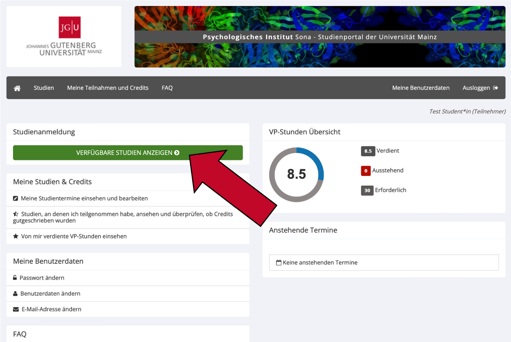
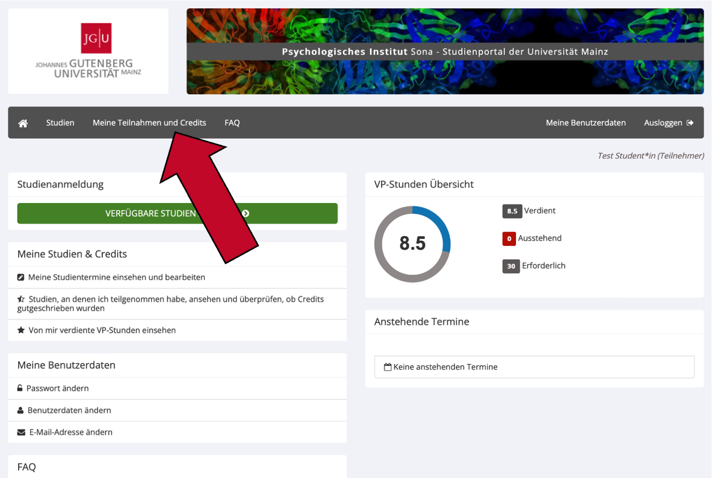

3 Studienteilnahme
3.1 Welche Arten von Studien gibt es?
Es gibt zwei Grundlegende Arten von Studien: Laborstudien (auch Standard-Studien) und Online-Studien (auch Webstudien).
Laborstudien finden in den Räumen und Laboren des psychologischen Instituts statt. Diese befinden sich in der Binger Straße 14-16, 55112 Mainz oder in der Wallstraße 3. Der genaue Ort und Raum einer Studie steht in ihrer Detailansicht (dafür auf den Titel der Studie klicken). Laborstudien können auch aus mehreren Teilen bestehen (sogenannte Multi-Part Studien). In diesem Fall müssen Sie bei Ihrer Anmeldung zur Studie für jeden Studienteil einen Termin aussuchen.
Online-Studien werden an Ihrem PC, Laptop oder Smartphone bearbeitet und können somit jederzeit und an jedem Ort durchgeführt werden. Wir bitten Sie jedoch, alle Online-Studien in einer ruhigen Umgebung ohne Ablenkungen durchzuführen. Nur so kann die Qualität der gesammelten Daten gewährleistet werden. Wenn Sie in der Detailansicht einer Online-Studie auf
Zeitfenster für diese Studie ansehenklicken, wird Ihnen der Teilnahmeschluss der Studie angezeigt. Bis zu diesem Zeitpunkt sollten Sie die Studie bearbeiten. Manche Online-Studien haben Voraussetzungen an das Gerät, an dem Sie die Studie durchführen (z.B. nur am PC/Laptop). Diese Voraussetzungen sind der Detailansicht der Studie zu entnehmen.
3.2 Wie melde ich mich für Studien an?
- Loggen Sie sich unter https://uni-mainz-jgu.sona-systems.com mit Ihrem Sona-Account ein.
- Im Hauptmenü klicken Sie auf den grünen Knopf
Verfügbare Studien anzeigen. So gelangen Sie zu einer Übersicht der für Sie verfügbaren Studien.

- Klicken Sie den Namen einer Studie an, um in die Detailansicht zu gelangen. Dort erhalten Sie nähere Informationen zur Studie, z. B. zu Ihrer Art und Dauer, zu Teilnahmevoraussetzungen, besonderen Einschränkungen sowie einen Kontakt zu einer verantwortlichen Person. Bitte prüfen Sie, bevor Sie sich für eine Studie anmelden, ob Sie die Teilnahmebedingungen erfüllen.

- Haben Sie sich für eine Studie entschieden, klicken Sie in der Detailansicht der Studie ganz unten auf den grünen Knopf
Zeitfenster für diese Studie ansehen(bei Laborstudien) oder aufAnmelden(bei Online-Studien).- Bei Laborstudien können Sie nun ein Zeitfenster auswählen, zu dem Sie ins Labor kommen und an der Studie teilnehmen möchten. Klicken Sie bei einem für Sie passenden Zeitfenster auf den grünen Knopf
Anmelden?Dann wird Ihnen nochmals eine kurze Übersicht mit dem Datum und dem Ort der Studie angezeigt. Klicken Sie erneut auf den grünen KnopfAnmelden?um Ihre Anmeldung abzuschließen. Nach erfolgreicher Anmeldung erhalten Sie eine Bestätigungs-E-Mail, die den Ort und die Zeit der Studie enthält. Zudem erhalten Sie einen Tag vor dem Termin eine Erinnerungs-E-Mail. - Bei Online-Studien wird Ihnen, nachdem Sie auf
Anmeldengeklickt haben, der Teilnahmeschluss der Studie gezeigt. Bis zu diesem Termin sollten Sie die Studie online durchgeführt haben. Wenn Sie erneut auf den grünen KnopfAnmelden?klicken, sind sie zur Studie angemeldet. Sie erhalten dann eine Bestätigung per E-Mail. Um sofort mit der Online-Studie zu beginnen, klicken Sie auf den KnopfUmfrage jetzt abschließen. Falls Sie die Studie nicht direkt im Anschluss bearbeiten wollen, können Sie sich bis zum Teilnahmeschluss jederzeit in Sona einloggen und die Studie unterVerfügbare Studien anzeigenfinden. Wenn Sie auf den Titel der Studie klicken, können Sie auf den KnopfUmfrage jetzt abschließenklicken. Sie müssen sich dafür nicht erneut anmelden.
- Bei Laborstudien können Sie nun ein Zeitfenster auswählen, zu dem Sie ins Labor kommen und an der Studie teilnehmen möchten. Klicken Sie bei einem für Sie passenden Zeitfenster auf den grünen Knopf
Wenn Sie Ihre Anmeldung stornieren möchten, lesen Sie den nächsten Abschnitt dieser Dokumentation.
3.3 Was mache ich, wenn ich doch nicht zum Termin kommen kann?
Unentschuldigtes Fehlen bei Laborstudien ist ein großes Ärgernis für Forscher*innen, da diese in vielen Fällen nur für Sie ins Labor kommen und das Experiment vorbereiten. Melden Sie sich daher bitte unbedingt ab, wenn Sie nicht zu einem Termin erscheinen können! Die Häufigkeit von unentschuldigtem Fehlen („No-Show“) wird für jede Versuchsperson im System dokumentiert. Bei zu vielen No-Shows behält sich die Administration vor, Ihren Zugang zu Studien auf Sona einzuschränken. Sie können sich nur dann von einer Studie abmelden, wenn die Abmeldefrist (meist 24 Stunden vor dem Termin) noch nicht abgelaufen ist. Falls die Abmeldefrist schon abgelaufen ist, lesen Sie den letzten Abschnitt dieses Beitrags.
- Loggen Sie sich mit Ihrem Account bei Sona ein.
- Wählen Sie den Menüpunkt
Meine Teilnahmen und Creditsaus. Hier gelangen Sie zu einer Übersicht über alle Studien, für die Sie angemeldet sind oder an denen Sie bereits teilgenommen haben. Neuere Studien befinden sich weiter unten in der Liste.

- Klicken Sie bei der betreffenden Studie rechts auf den Knopf
Abmelden?und bestätigen Sie die Abmeldung mitJa, ich möchte meine Teilnahme absagen. Sie erhalten daraufhin eine Bestätigungs-E-Mail.

Wenn Sie sich vom zweiten Teil einer zweiteiligen Standardstudie abmelden, wird die Anmeldung für den ersten Teil nicht automatisch aufgehoben. Da die Teilnahme an nur einem Teil der Studie nicht sinnvoll ist, sollten Sie entweder (a) die Versuchsleitung kontaktieren, um einen neuen Termin für den zweiten Teil zu finden, oder (b) sich auch vom ersten Teil der Studie abmelden.
Sollte die Abmeldefrist schon abgelaufen sein, kontaktieren Sie bitte den*die Forscher*in der Studie per E-Mail. Wir bitten Sie, sich möglichst während der Abmeldefrist von der Studie abzumelden und diese Option nur in Notfällen zu nutzen, beispielsweise wenn Sie kurzfristig erkrankt sind oder Ihre Kinderbetreuung ausgefallen ist. Rechtzeitige Absagen erhöhen die Planbarkeit für Forscher*innen.
3.4 Gibt es Voraussetzungen für die Studienteilnahme?
Grundsätzlich müssen Sie für die Teilnahme an psychologischen Studien in Sona mindestens 18 Jahre alt sein. Für manche Studien gibt es darüber hinaus weitere Voraussetzungen. Diese sind im Abschnitt Teilnahmevoraussetzungen jeder Studie aufgeführt, den Sie in der Überblicksansicht (wenn Sie im Hauptmenü Verfügbare Studien anzeigen anklicken) in der rechten Spalte finden. Wenn Sie auf die Detailansicht einer Studie gehen (dafür den Titel der Studie anklicken), sehen Sie die Teilnahmevoraussetzungen zudem im Abschnitt Teilnahmevoraussetzungen.